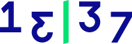

# Project Open-Source @ 13|37

This document is your entry point to all things open-source at 13|37.
## Getting started
- We have an [Open-Source Contribution Policy](./policy_v2.0.md). A document containing the do's and dont's of working on open-source projects while working at 13|37. Please read it or at least skim through.
- Now something a bit more fun. Here is a [Github Profile Guide](./github-guide.md) on how to improve your github profile, your project readmes and your github pages.
## The projects
This is a list of open-soruce projects to which 13|37 have contributed or are still contributing to.
Here is the [List Of Projects](./projects.md).
v2